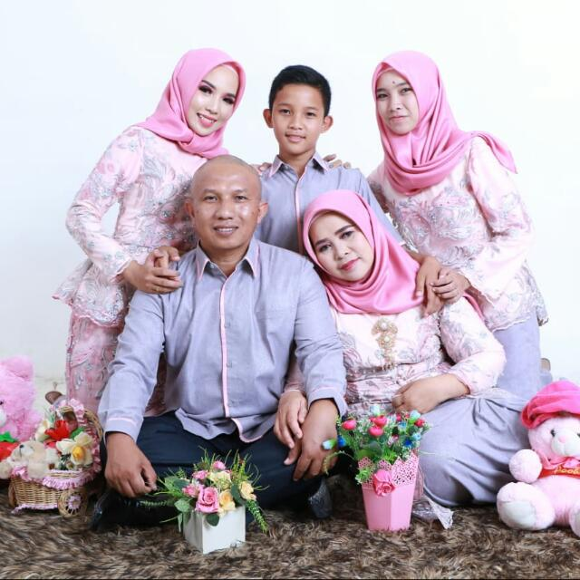

What is family?
The family is a group or group of people who live together as one unit or the smallest community unit and usually there is always blood relations, marital ties or other ties, living together in one house led by the head of the family and eating in a pot.
There are several definitions of family from several sources, namely:
The family is a group of people with ties of marriage, birth, and adoption that aim to create, maintain a culture, and enhance the physical, mental, emotional, and social development of each family member (Duvall and Logan, 1986).
Family is two or more individuals who live in one household because of blood relations, marriage, or adoption. They interact with each other, have their respective roles and create and maintain a culture (Bailon and Maglaya, 1978).
The family is the smallest unit of society which consists of the head of the family and several people who gather and live in a place under one roof in a state of interdependence (Indonesian Ministry of Health, 1988).
This is my family, which consists of 5 people including me, the first is my hero. My first love is my father, my father was born in a small town called Sungai Penuh located at the foot of Mount Kerinci on October 5, 1971. Now my father working as a civil servant at a school in Rejang Lebong district. the second is my mother, my heaven, my mother was born right in the city where I live now, she was born on August 1, 1972, my mother now works as a superintendent of the principal in Rejang Lebong, my father and mother met in college and finally decided to married.I also have one older sister named Inda Carmia, we are 5 years apart, my sister was born on Kartini's Day, which is 21 April 1998, now she works in the health department in my city as a health analyst. and lastly I have a younger brother named Mirza Fachri Anugrah, he and I are 4 years different, he was born on 22 November 2007, and is now in grade 8 junior high school, now he is taller than me.